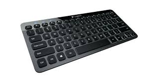
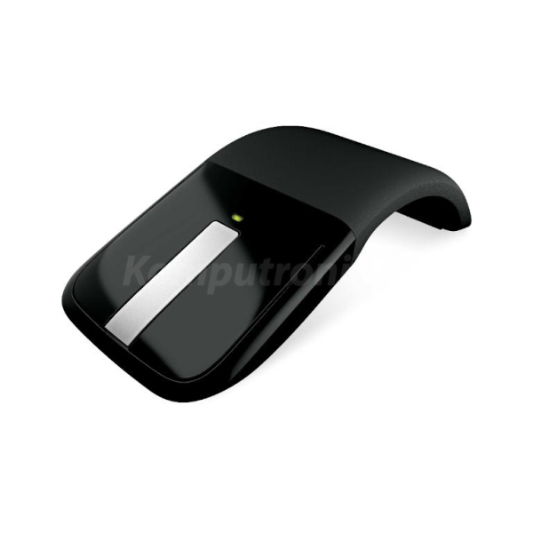
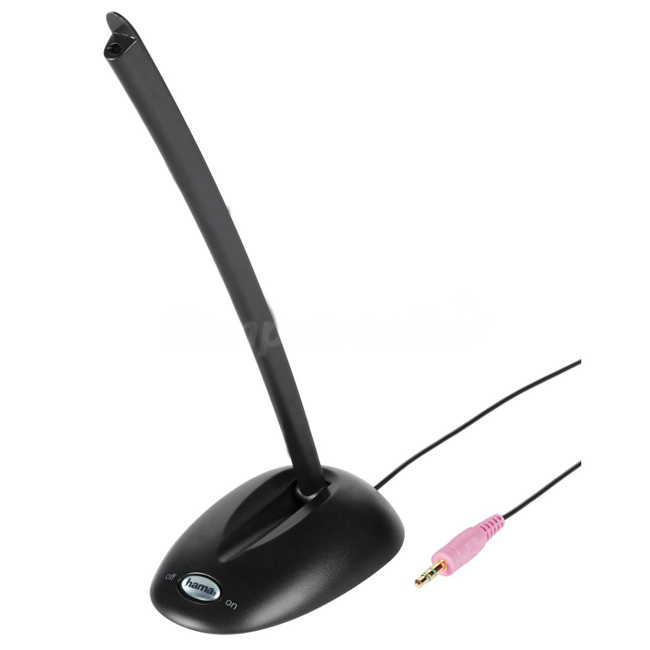
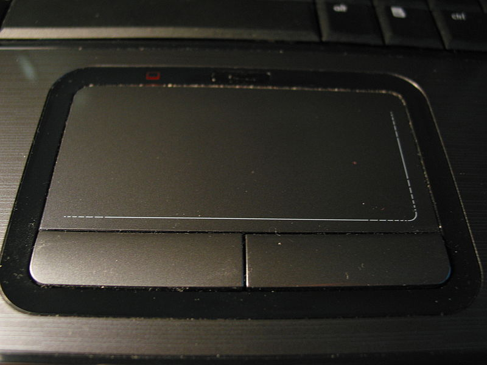
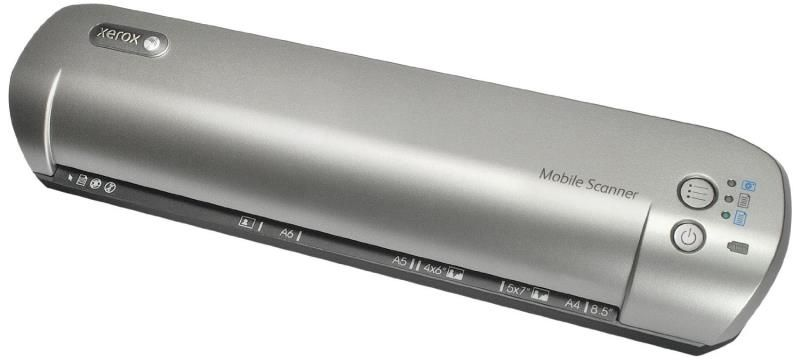

a)Klawiatura

Klawiatura komputerowa – uporządkowany zestaw klawiszy służący do ręcznego sterowania urządzeniem lub ręcznego wprowadzania danych. W zależności od spełnianej funkcji klawiatura zawiera różnego rodzaju klawisze – alfabetyczne, numeryczne, znaków specjalnych, funkcji specjalnych, o znaczeniu definiowanym przez użytkownika.
"https://pl.wikipedia.org/wiki/Klawiatura_komputerowa"
Producent-Logitech
Gwarancja-2 lata
typ klawiatury-płaska
przyciski-membranowe
komunikacja-bezprzewodowa
rodzaj komunikacji-Bluetooth
klawisze multimedialne-tak
wersja produktu-BOX
kolor-czarny
b)Mysz

Mysz (z ang. mouse) – urządzenie wskazujące używane podczas pracy z interfejsem graficznym systemu komputerowego.
"https://pl.wikipedia.org/wiki/Mysz_komputerowa"
Producent-Microsoft
Gwarancja-2 lata
typ myszy-Bluetrack
komunikacja z myszą-bezprzewodowa
komunikacja bezprzewodowa-fale radiowe
zastosowane technologie-nanoodbiornik, dotykowe kółko przewijania
ergonomiczny kształt-tak
interfejs-USB
wersja produktu-BOX
kolor-czarny
KLASA PRODUKTU-MS Akcesoria
MS Akcesoria-Myszki
c)Mikrofon

Mikrofon – przetwornik elektroakustyczny służący do przetwarzania fal dźwiękowych na zmienny prąd elektryczny.
"https://pl.wikipedia.org/wiki/Mikrofon
Producent-Hama
Gwarancja-1 rok
komunikacja z urządzeniem-przewodowa
rodzaj-komputerowy
statyw-tak
złącze-1 x jack 3,5 mm
długość przewodu-2.5 m
pasmo przenoszenia-30 - 16000 Hz
czułość mikrofonu -62 dB
impedancja mikrofonu-1400 Ohm
kolor-czarny
d)TouchPad

Touchpad, trackpad (pol. panel dotykowy) – urządzenie wskazujące, które można najczęściej spotykać w laptopach – zastępujące mysz. Zwykle zintegrowane jest z dwoma przyciskami odpowiadającymi funkcjonalności przyciskom myszy, a jego rozmiar rzadko przekracza powierzchnię 50 cm².
"https://pl.wikipedia.org/wiki/Touchpad"
e)Skaner

Skaner – urządzenie służące do przebiegowego odczytywania: obrazu, kodu paskowego lub magnetycznego, fal radiowych itp. do formy elektronicznej (najczęściej cyfrowej). Skaner przeszukuje kolejne pasma informacji odczytując je lub rejestrując.
"https://pl.wikipedia.org/wiki/Skaner"
Specyfikacja podstawowa
Opis produktu--Xerox Mobile Scanner - skaner z podajnikiem
Rodzaj urządzenia--Skaner z podajnikiem - przenośny
Typ interfejsu--WiFi , USB 2.0
Typ elementu skanującego--Contact Image Sensor
Źródło światła--LED
Funkcje dodatkowe--Skanuj do karty pamięci
Rozmiar maksymalny nośnika--216 x 297 mm
Typ wejścia--Kolor
Rozdzielczość optyczna--300 dpi
Prędkość skanowania--10 sek/str.
Maks. format dokumentu--216 mm x 297 mm
Rodzaje obsługiwanych nośników--Papier zwykły, wizytówka, plastic card,zdjęcie
Bateria--1
Wymagania systemowe--Microsoft Windows 7, Microsoft Windows Vista, Apple MacOS X 10.5 lub wyższy, Microsoft Windows XP SP3
Wymiary (szer./głęb./wys.)--7 cm x 29.2 cm x 5.1 cm
Waga--638 g
Strona główna